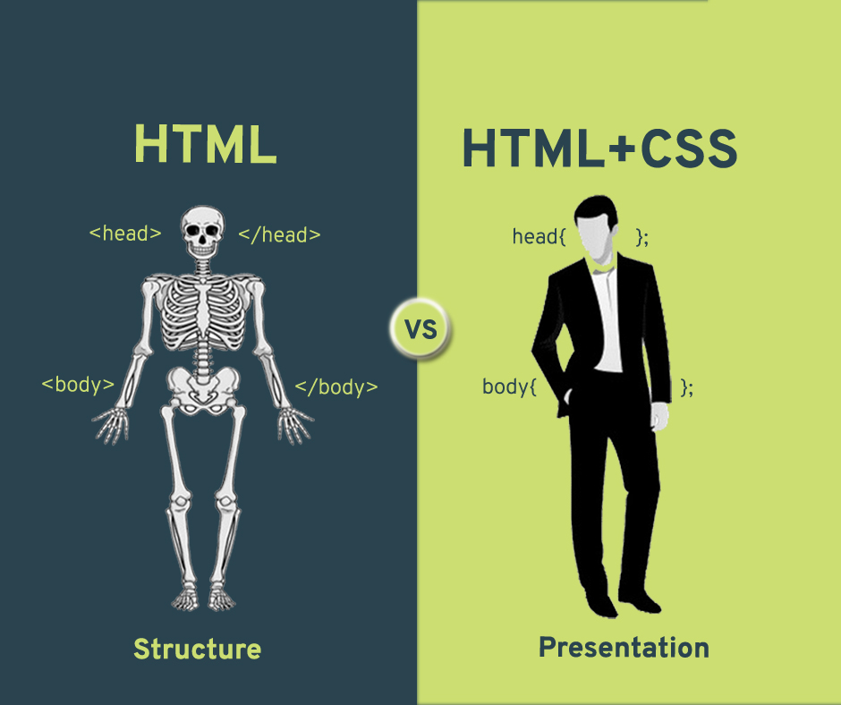

Základy tvorby webu

Obsah kurzu
Pavučina plná stránek
Služba WWW
URL adresy a prohlížeče
Protokol HTTP(S)
Tajemný kód webových stránek
Jazyk HTML
Struktura stránky
Verze HTML a validátory
Dejte stránkám styl
CSS neboli kaskádové styly
Přiřazení stylů k webové stránce
Možnosti využití kaskádových stylů